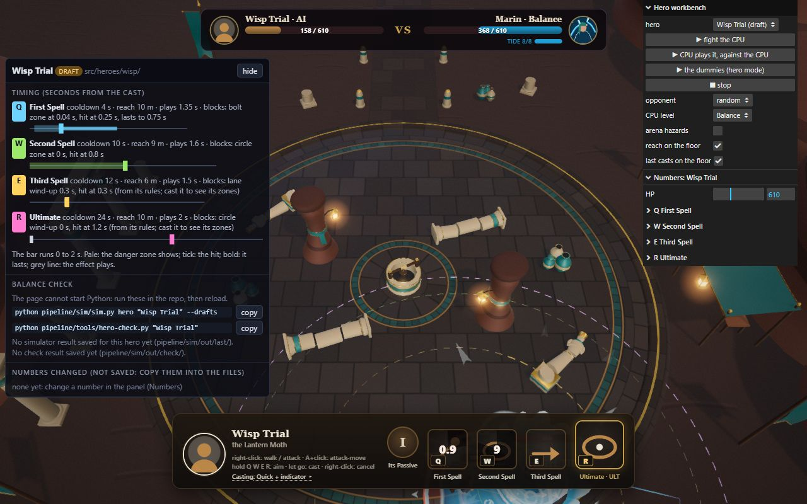
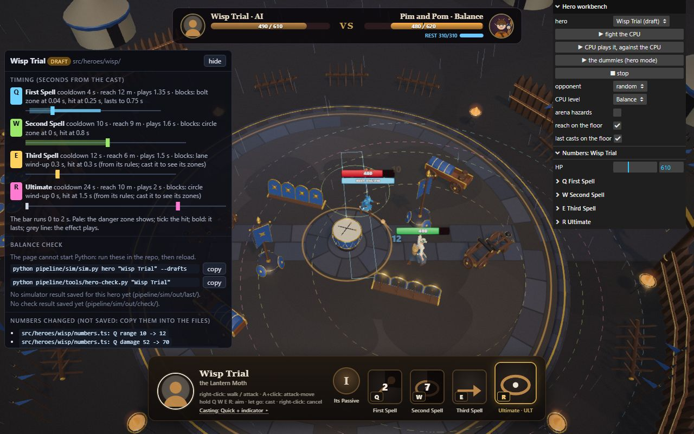
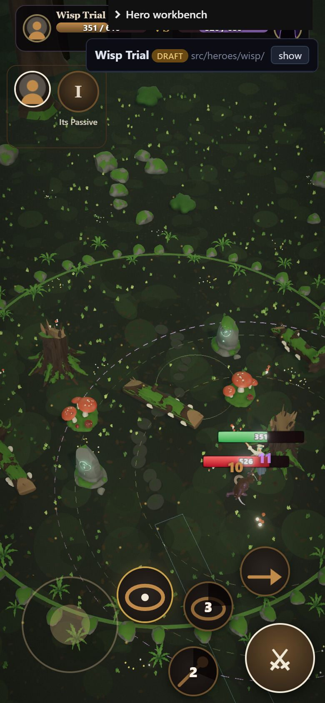
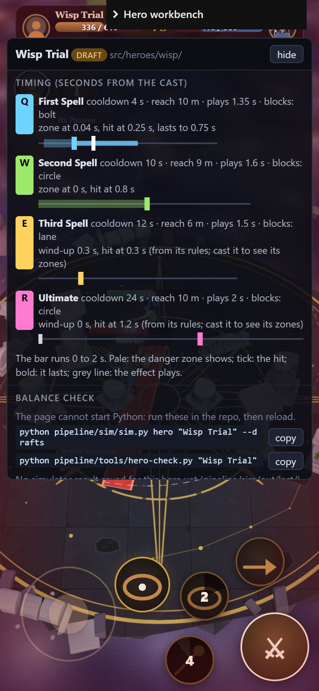
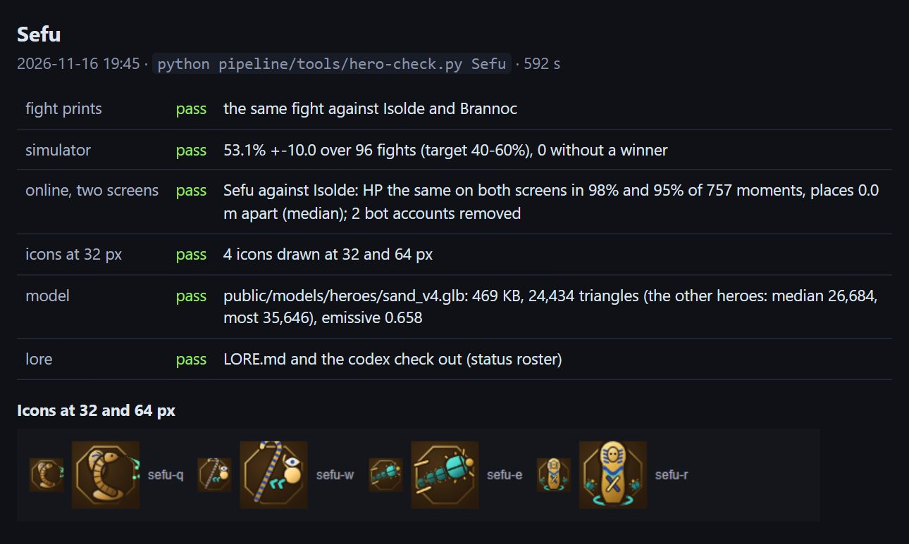
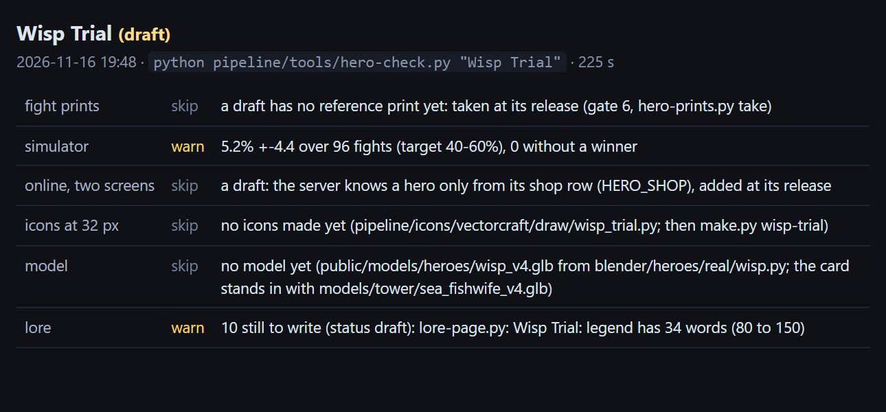

New heroes: one command, a workbench, one check
A new hero used to mean about 16 files written by hand in the right order. Now one command writes them all as a draft, the workbench lets you play it and change its numbers while you watch, and one command runs every check and gives a short page. The six gates and your yes at each stay exactly as before.
1. One command makes the hero
python pipeline/tools/new-hero.py "Wisp Trial"
Here a throwaway test hero (deleted again afterwards). What it made:
For a hero already planned in the lore (Morwen, Kohaku and the others), it reads the lore entry and the kit sheet: Morwen comes out with Iron Nail as a bolt, Salt Circle as a circle, Hex Bundle as a sure hit, and The Boundary (a wall: no building block fits it yet) as a stand-in circle with a note. Until its model is built the hero borrows a plain Coast-folk worker's body.
Tried on four planned heroes (Ostrel, Kohaku, Itzel and Morwen, removed again): all 16 spells play without errors, each shows its danger zone, and in CPU fights every kind of spell lands (cone, bolt, circle, sure hit, dash, the circle round the hero).
2. The workbench: play it, change it, see it
Open /workbench.html on the dev server. Pick any hero (drafts included), fight the CPU, let the CPU play it, or
try it on the dummies. Each spell's reach is a dashed ring on the floor (Q
W E
R), and each spell's last cast stays on the floor as the shape that was
hit. The panel on the left shows each spell's timing; the panel on the right changes any number live.




The same workbench can also open on the tool page with /?bench, once one line is added there (the parent adds it
after the hero bugs agent's work is merged).
3. One command checks it
python pipeline/tools/hero-check.py Sefu
It runs the hero's fight prints, the simulator, two screens online, its icons at 32 px, its model's size and weight, and the lore checks, and writes a short page (the workbench shows the last result too).


4. A draft stays out of the game
| Check, with the test hero present | Result |
|---|---|
| The roster as the game sees it (every kit, tooltip, icon, passive, spell) | identical: 40 heroes, 164 spells |
| All 80 fight prints (against Isolde and Brannoc) | 80 of 80 the same |
| The game's lore and Codex files | unchanged |
| The lore check | passes; the draft's 5 missing pieces listed as notes |
| The game's first download | the same within 1 KB of 6,119 KB (the workbench is a page of its own, 16 KB) |
What you do
- Nothing now. The next new hero starts with
python pipeline/tools/new-hero.py "Name", and goes through the same six gates as Anka, with a picture and your yes at each. - When you want to try the workbench: on the dev server, open
http://localhost:5173/workbench.html.
Details: docs/pipeline/new-hero.md (part 3) and docs/pipeline/hero-framework.md (section 13).